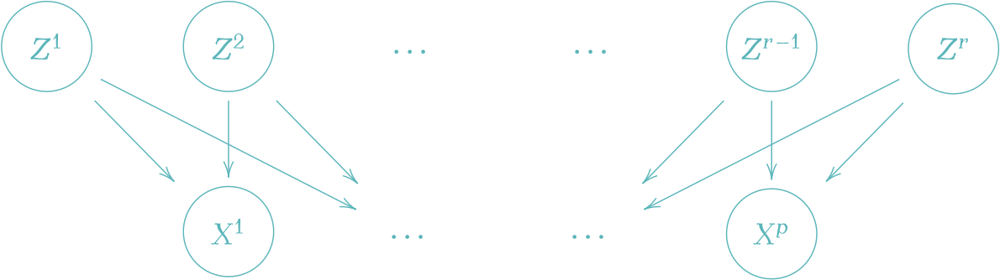
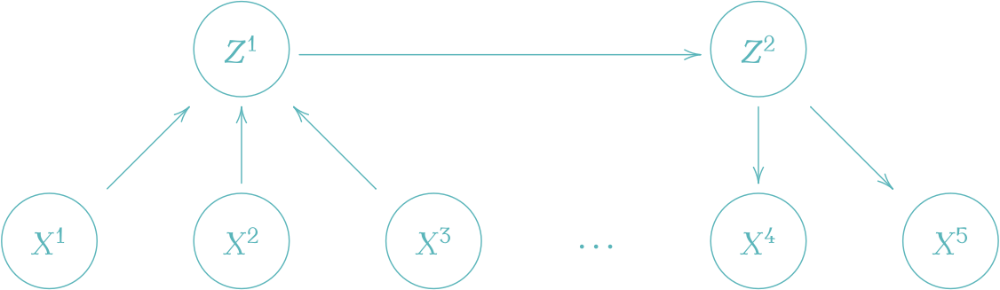
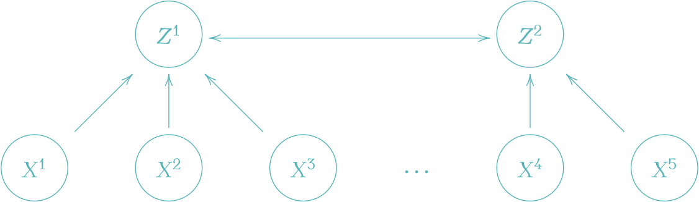

表現学習と非線型独立成分分析
「データ理解」に向けた深層潜在変数モデル
2024-07-29
A Blog Entry on Bayesian Computation by an Applied Mathematician
$$
$$
潜在変数模型とはどうやらとんでもなく広い射程を持った対象であるようである．
このように種々の文脈で登場する潜在変数模型であるが，それぞれの文脈において「潜在変数」の果たす役割は全く違う．
しかし，数学的には全く同じ枠組みで記述できる．従って，そのように扱うことは一定の価値を持つだろう．
本稿では問題とする潜在変数モデルを線型かつ１層に固定し，それぞれの文脈での「使い方の違い」に注目することを目指す．
主成分分析では，\(p\) 次元のデータ \(\{x_i\}_{i=1}^n\subset\mathbb{R}^p\) の各成分を，より少数の潜在変数を持った１層の線型 Gauss 模型

で説明しようとする．
最も，このような潜在変数モデルとしての見方とベイズ推定による一般化は probabilistic PCA (Tipping and Bishop, 1999) / SPCA (Sensible PCA) (Roweis, 1997) として初めて自覚された見方である．
\(Z^1,\cdots,Z^r\) 上の事前分布がデルタ分布に縮退している場合が古典的な PCA である (Roweis, 1997)．
いずれの場合も追加の過程なくしてモデルは識別可能性がなく，後続タスクに応じて種々の制約を追加することで所望の解を得る，という動的な使い方がなされる．
以降，\(X\in\mathcal{L}(\Omega;\mathbb{R}^p),Z\in\mathcal{L}(\Omega;\mathbb{R}^r)\) を確率変数， \[ \boldsymbol{X}=(x_i^j)\in M_{n,p}(\mathbb{R}),\boldsymbol{Z}=(z_i^j)\in M_{n,r}(\mathbb{R}) \] を行列として，probabilistic PCA の見方を先に提示し，その特別な場合として種々の特殊化手法を見る．
PCA ではデータ行列を \[ \boldsymbol{X}:=\begin{pmatrix}x_1^\top\\\vdots\\x_n^\top\end{pmatrix}\in M_{n,p}(\mathbb{R}) \] で定めたとき，データ次元 \(p\) より小さい数の成分 \(r\) で説明しようとする： \[ \boldsymbol{X}\approx\boldsymbol{Z}C^\top,\qquad\boldsymbol{Z}:=\begin{pmatrix}z_1^\top\\\vdots\\z_n^\top\end{pmatrix}\in M_{n,r}(\mathbb{R}),C\in M_{p,r}(\mathbb{R}). \]
この問題は \(\boldsymbol{X}\) の 特異値分解 (SVD) \(\boldsymbol{X}=U\Sigma V^\top\) により解ける： \[ \boldsymbol{Z}=U\Sigma_{1:r}^\alpha A=\boldsymbol{X}(\underbrace{V\Sigma^{\alpha-1}_{1:r}A}_{=:W}),\qquad C:=V\Sigma_{1:r}^{1-\alpha}(A^{-1})^\top. \] ただし，\(\alpha\in\mathbb{R},A\in\mathrm{GL}_p(\mathbb{R})\) は任意である．この解は，特異値分解の性質により，残差を Hilbert-Schmidt ノルムの意味で最小にする： \[ \min_C\|\boldsymbol{X}-\boldsymbol{Z}C^\top\|_\mathrm{HS}=\min_C\frac{1}{n}\sum_{i=1}^n\lvert x_i-Cz_i\rvert^2=\sigma_{r+1} \tag{1}\] この目的関数は復元誤差とも理解できる．ただし，\(\sigma_{r+1}\) は行列 \(\boldsymbol{Z}C\) の第 \(r+1\) 特異値である．
荷重行列 \(W\) が \(W^\top W=I_r\) を満たすという制約条件を追加すると，目的関数 (1) は潜在変数の分散を最大にすることと等価になる： \[ \operatorname*{argmin}_{W}\|\boldsymbol{X}-\boldsymbol{Z}W\|_\mathrm{HS}=\operatorname*{argmin}_W\operatorname{Tr}((\boldsymbol{X}W)^\top\boldsymbol{X}W). \tag{2}\]
すなわち，\(\boldsymbol{Z}=\boldsymbol{X}W\) の変動が差大になるようにすれば良い．
そのためには，確率変数 \(X\) のデータ行列 \(\boldsymbol{X}\) から計算した経験共分散行列 \(S\in M_{p}(\mathbb{R})_+\) の固有ベクトルのうち，対応する固有値が大きいものから \(w_1,\cdots,w_r\) として荷重行列とすれば良い： \[ W:=(w_1\;\cdots\;w_r). \]
実はこれは解の１つに過ぎず，\(W\) に右から直交行列を乗じて「回転」させたものは全て解になる．上の解は追加の条件 \(Z^\top Z=I_r\) を課すことで特定される．
各次元に関する長さのスケールを揃えるために，PCA を始める前にデータを正規化しておくか，または共分散行列 \(S\) の代わりに，相関行列を用いるべきである．
また，実際に最適化や相関行列の固有値分解をすることはなく，基本的に SVD の方が \(O(np^2)+O(p^3)\) と高速である．
さらに次元 \(p\) が高い場合は，確率的 SVD (Halko et al., 2011), (Drineas and Mahoney, 2016) を用いてさらに \(O(nr^2)+(r^3)\) まで削減できる．このような手法は確率的数値解析と呼ばれる (Murray et al., 2023)．
\(W^\top W=I_r\) の仮定の下で，PCA の目的関数 (1) は，潜在変数の分散最大化 (2) と見れるのだった．
これは同じ仮定の下で，データ変数 \(X\) の最小誤差の線型射影を求める問題とも見れる： \[ \operatorname*{argmin}_W\|\boldsymbol{X}-\boldsymbol{Z}W\|_\mathrm{HS}=\operatorname*{argmin}_W\|\boldsymbol{X}-\boldsymbol{X}WW^\top\|_\mathrm{HS}. \]
なお，一般の行列 \(A\) について \(P_A=A(A^{-1}A)^+A^\top\) は \(\mathrm{Im}\,A\) 上の直交射影になる．\(A\) が直交行列であるとき，\(P_A=AA^\top\) が成り立つ．
因子分析では，\(Z^1,\cdots,Z^r\) を対等な因子と見て，それぞれのデータへの影響を調べたい．このような場合は， \[ \frac{1}{n}\boldsymbol{Z}^\top\boldsymbol{Z}=I_r \] が自然な制約になる．この際の解は，直交行列 \(T\in O_r(\mathbb{R})\) の違いを除いて， \[ \boldsymbol{Z}=\sqrt{n}UT,\qquad C=\frac{1}{\sqrt{n}}V\Sigma_{1:r}T,\qquad W=\sqrt{n}V\Sigma_{1:r}^{-1}T, \] まで確定する．
しばしば，追加の仮定 \[ C^\top C=\mathrm{diag}(\rho_{1:r}),\qquad \rho_1\ge\cdots\ge\rho_r\ge0 \] を課して得られる一意な解 \[ \boldsymbol{Z}=\sqrt{n}U,\qquad C=\frac{1}{\sqrt{n}}V\Sigma_{1:r},\qquad W=\sqrt{n}V\Sigma_{1:r}^{-1}, \] を 初期解 と呼び，これを「回転」させることで他の解が探索され，所望の分解を探す．
因子分析では (Thurstone, 1947) 以来，種々の回転法とアルゴリズムが蓄積している (足立浩平 and 山本倫生, 2024)．一般にこの文脈では，(Thurstone, 1947) にいう「単純構造」を達成した，解釈が容易な因子をドメイン知識に基づいて構成することを目指す．この「単純構造」とは，現代でいう一種の disentangled factor と理解できる．
主成分分析が「低階数近似」ならば，因子分析は「高階数近似」というべきである (足立浩平, 2023)．

より正確には，因子分析は，観測の各次元 \(X^1,\cdots,X^p\) ごとに「独自因子」\(Z^1,\cdots,Z^p\) を想定しつつ，全観測に共通する「共通因子」\(F^1,\cdots,F^r\) をどのように抽出できるかを考える，という志向性を持つ：

この意味では，FA は独自因子 \(U^1,\cdots,U^p\) を追加した PCA とも理解できる．
歴史的には (Spearman, 1904) が古典テスト理論の文脈で \(r=1\) の因子分析を，(Thurstone, 1947) が一般の \(1\le r<p\) の場合の因子分析を「回転」の手法と共に導入した．
さらに興味深いことに，FA では PCA をはじめとした多くの多変量分析手法と違い，(Lawley, 1942), (Anderson and Rubin, 1956) らにより，初期から確率的な扱いが発展した手法である (足立浩平 and 山本倫生, 2024)．
FA では \(\boldsymbol{Z}=(\boldsymbol{F}\;\boldsymbol{U})\in M_{n,r+p}(\mathbb{R})\) の分解に基づき， \[ \boldsymbol{X}\approx\boldsymbol{F}A^\top+\boldsymbol{U}\Psi^{1/2},\qquad A\in M_{r,p}(\mathbb{R}),\Psi=\mathrm{diag}(\psi_1,\cdots,\psi_p)\in M_p(\mathbb{R}), \] によってデータ行列 \(\boldsymbol{X}\in M_{n,p}(\mathbb{R})\) を説明しようとする．1
PCA よりさらに識別可能性は絶望的であるが，FA では潜在変数の解釈可能性担保のため，次の仮定を課す： \[ \boldsymbol{1}_n^\top\boldsymbol{F}=\boldsymbol{0}_r,\qquad \boldsymbol{1}_n^\top\boldsymbol{U}=\boldsymbol{0}_p, \] \[ \boldsymbol{F}^\top\boldsymbol{F}=n\boldsymbol{I}_r,\qquad \boldsymbol{U}^\top\boldsymbol{U}=n\boldsymbol{I}_p,\qquad\boldsymbol{F}^\top\boldsymbol{U}=O. \] すなわち，推定される確率変数 \(F,U\) が標準化されていて互いに無相関であるように誘導する．
また，\(\boldsymbol{U}\) の経験分散が \(\Psi\) になることに注意．
この問題は，\(C:=(A\;\Psi^{1/2})\) と定めると，PCA と同じ問題 (1) に帰着される： \[ \min_C\|\boldsymbol{X}-\boldsymbol{Z}C^\top\|_\mathrm{HS}. \]
これはやはり特異値分解により解くことができる (De Leeuw, 2004)．
解は直交行列による回転を除いても，やはり一意に定まらないようである．
ここで， \[ U:=\begin{pmatrix}U^1\\\vdots\\U^p\end{pmatrix}\in\mathcal{L}(\Omega;\mathbb{R}^p),\qquad F:=\begin{pmatrix}F^1\\\vdots\\F^r\end{pmatrix}\in\mathcal{L}(\Omega;\mathbb{R}^r), \] を確率変数とすると， \[ X\approx AF+\Psi^{1/2}U \tag{3}\] によって \(X\) に確率モデルが誘導されることになる．
\(U,F\) に正規性の仮定をおけば，このモデルは EM アルゴリズムなどを用いて最尤推定できる (Rubin and Thayer, 1982)．このような最尤推定のアプローチは (Lawley, 1942) から考えられていた．
一方で，\(X\) の経験分散 \(S\) を，式 (3) の右辺の共分散 \[ \Sigma:=AA^\top+\Psi \] となるべく近づけるように学習する方法もある．
例えば (Harman and Jones, 1966), (Harman and Fukuda, 1966) では，Hilbert-Schmidt ノルム \(\|S-\Sigma\|_\mathrm{HS}\) の最小化することで解を探索する方法が考慮された．
このように，データの共分散行列を低階数近似するアプローチは 共分散構造分析 (Bock and Bargmann, 1966) ともいう．
さらに，確率論的なアプローチは一般の構造方程式モデル (SEM, 次節 4 参照) へと発展 (K. G. Jöreskog, 1970), (Sörbom, 1974), (Karl G. Jöreskog, 1978) し，現状，共分散構造分析は SEM の特別な場合と解される．2
(K. G. Jöreskog, 1969) は因子分析モデルを潜在変数モデルとして，事前情報を取り入れるなど柔軟に用いた．特に，仮説検証のための使い方を提案し，自身の手法を 検証的因子分析 (Confirmatory FA) と呼び，それ以前の手法に 探索的因子分析 というレトロニムを与えた．3
最終的に，共分散構造に基づいた非線型数値最適化手法を推論エンジンとして多くの潜在変数モデルが統一的に推定できる上に，潜在変数モデルをうまく設計することで因果推論・高次の因子分析・分散分析など従来考慮されなかった新たなタスクにも適用可能という見方に到達した (Karl G. Jöreskog, 1978), (Bentler, 1980)．4
これを 共分散構造分析 または 構造方程式モデリング という．5 心理学の文脈では，潜在変数のことを 構成概念 (construct) と呼んでいた (清水和秋, 1989), (豊田秀樹, 1992)．
SEM の名前の下に，行動計量学において，多くの既存の多変量解析法（因子分析，パス解析，二段階抽出モデル，潜在構造分析，項目反応モデルな）はいずれも潜在変数モデルと特殊な形だと解釈できることが自覚された (McArdle, 1984), (Muthén, 2002)．
このことから，SEM は第二世代の多変量解析 (Fornell, 1985) とも評される．6
また，そもそも Jöreskog は因子分析を研究していた時期 (Karl G. Jöreskog, 1966) (K. G. Jöreskog, 1967) から，数値的な解法とコンピュータプログラムの開発にも重点を置いていた．SEM も，コンピュータプログラム LISREL (LInear Structural RELationships) の存在が，広い分野の人口に膾炙した要因として大きい (清水和秋, 1989), (Grimm and Yarnold, 2016)．
構造方程式モデルがどのように因子分析，因果分析，共分散構造分析を統合し，LISREL プログラムと共に発展していたかが，(清水和秋, 1994) に大変わかりやすくまとまっている
PLS (Partial Least Square) モデル (K. G. Jöreskog and Wold, 1982) では，次のような潜在変数モデルを用いて，２つの構成概念間の因果関係を評価しようとする (豊田秀樹, 1991)：

パス図において，潜在変数から観測変数に矢印が伸びている場合，これは影響的指標と呼ばれ，観測のモデルと解され，誤差が入ることが想定される (豊田秀樹, 1991)．7 逆の矢印は形成的指標という．
したがって，潜在変数から構成概念への矢印が全て影響的であった場合，これは（探索的）因子分析と等価になる．
これは社会学において 多重指標分析 と呼ばれていたモデルに相当し (白倉幸男, 1984) (清水和秋, 1989)，経済学において 同時方程式モデル と呼ばれていたモデルに相当する (Bentler, 1980)．このように，SEM の名と LISREL プログラムの下で，多くの社会科学分野で使われていたモデルが，形式的にはほとんど等価であるという了解が形成されていった．
正準相関分析においては，２つの構成概念の間は相関関係で結び，すべての観測は形成的な影響を及ぼすとする（観測誤差は想定しない） (豊田秀樹, 1991)：

混合モデルは SEM の別の選択肢としても使える．また，ランダム効果要因を明示的にモデルに組み込む意味で，一般線型モデルの確率論的な拡張と考えることもできる (狩野裕, 2002)．8
ここでは，歴史を感じる引用をいくつか紹介したい．
心理測定学 (psychometrics) における因子分析，計量経済学 (econometrics) における同時方程式モデル (simultaneous equation models), そして生物測定学 (biometrics) におけるパス解析 (path analysis) を，共分散構造分析の下に統一化することが可能となった契機は，潜在変数 (latent variables) の概念である (Bentler, 1980)．(清水和秋, 1989)
そして，異分野横断の知見交流が進んだ契機の一つは，LISREL プログラムの存在であった．(清水和秋, 1994) では，ETS での安定した研究環境が LISREL の継続的な保守を可能にして最終的には WINDOWS 上でも安定して提供され，これを用いることを通じて異分野を巻き込みながら構造方程式モデリングが発展していった様子が詳細に解説されている．
そして現代はというと，計算機統計学と機械学習が先行しており，種々の科学への応用とそれぞれ固有の課題への特殊化が遅れている状態だと言うべきではないだろうか？
ベイズ機械学習 や 位相的機械学習 をはじめとした丁寧なモデリングが，分野横断の相互理解の試みを促進してくれるのではないかと，筆者は意気込んでいる．
(足立浩平 and 山本倫生, 2024) によると，この行列分解による定式化は Henk A. K. Kiers によるもので，初出は同大学からの博士論文 (Socan, 2003) が最初ではないか，とのこと．この見方を MDFA (Matrix Decomposition Factor Analysis) と呼ぶ．(足立浩平 et al., 2019) も参照．↩︎
ただし，(星野崇宏 et al., 2005) は SEM をより一般的とし，共分散構造分析とは観測変数が連続な場合の下位モデルである，と解している．↩︎
(豊田秀樹, 1992) では CFA を確認的因子分析と呼んでいる．(豊田秀樹, 1991) では，古典テスト理論を確認的因子分析の下位モデルとして紹介している．↩︎
現代ではコンピュータの力により，新たに「生成」というタスクが加わったと思うと，感慨深い．↩︎
多変量解析の高級言語とか形容することもあるという．構造方程式モデリングについては，(豊田秀樹, 1991), (狩野裕, 2002) も参照．↩︎
また，パス図では観測変数は四角で囲むべきであるが，ここでは省略した．↩︎
ただし，SEM は共分散構造，混合モデルは平均構造に分析の焦点がある，という志向の違いもある．(狩野裕, 2002) も参照．↩︎